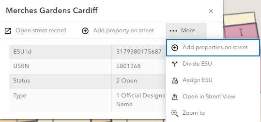

Display Street details |
Top Previous Next |
|
If you click on a street or ESU on the map an information box is displayed showing the details of the selected object e.g.  Along the top or bottom of the dialog (placement depends on where on the map you clicked) you may select to open the street record, add a property or properties or select the ... Actions menu to display other actions (highlighted in red above). |